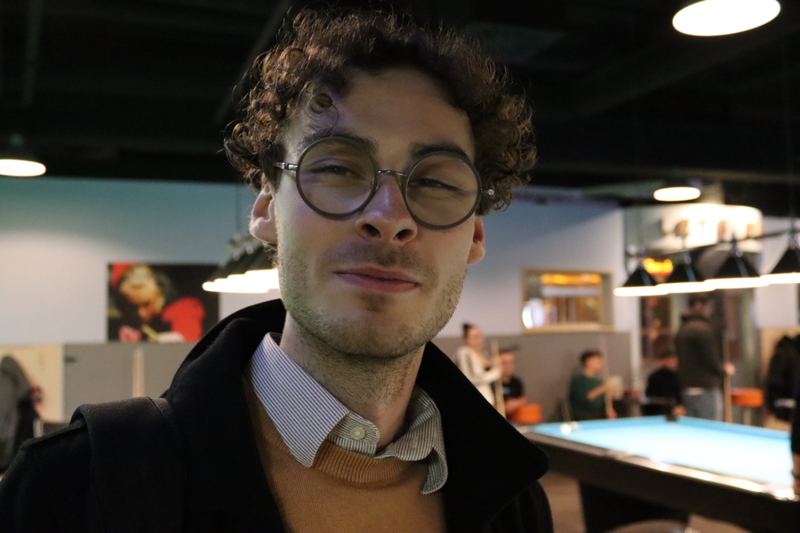

My name is Karolis Dembickas. Since September 2025, I have been a PhD student under the supervision of Lennart Meier at the Mathematical Institute of Utrecht University. Before that, I was a Master's student in Mathematical Physics at the University of Hamburg, working under the supervision of Ingo Runkel. In my free time, you can find me at the local bouldering gym.
Email: k.dembickas "at" uu.nl
My research lies at the interface of homotopy theory and mathematical physics. I am particularly interested in functorial field theories and their connections to generalized cohomology theories, studied through the lens of higher algebra and higher category theory.